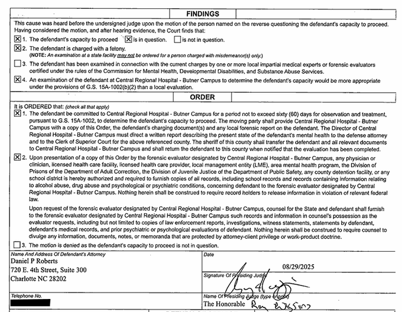
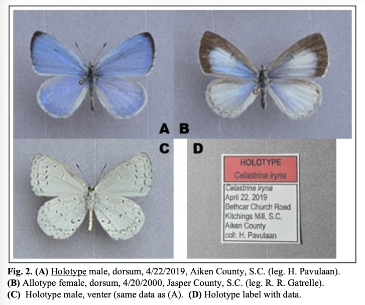

The Incident
Aug 22, 2025 - Incident Resulting in Death
At approximately 9:55 PM, Charlotte police responded to an assault with a deadly weapon call aboard the Lynx Blue Line near 1821 Camden Rd. Witnesses reported a female had been stabbed in the throat. Officers located the victim, Iryna Zarutska, in the rear car of the train. She was pronounced deceased at 10:05 PM. A suspect matching witness descriptions was arrested on the platform minutes later. A folding knife was recovered nearby.
Details reflect sworn affidavit submitted by Detective H.K. Buhr Jr. on August 23, 2025.Judicial Actions & Case Status
Aug 23, 2025 - Case Filed
The State of North Carolina formally filed criminal charges against Decarlos Brown Jr. in Mecklenburg District Court. The case was assigned under number 25CR394562-590.
Aug 28, 2025 - Arrest Warrant Returned
The Mecklenburg District Court formally returned the arrest warrant for Decarlos Brown Jr., confirming the charges and custody status. The warrant was issued based on probable cause outlined in the affidavit submitted by Detective Buhr.
Aug 28, 2025 - Bond Denied & Custody Confirmed
Magistrate L. Peters issued a formal release order for Decarlos Brown Jr., confirming that no bond was authorized under North Carolina statute §15A-533(b) due to the severity of the charge. The defendant was ordered to remain in custody at Mecklenburg County Jail and to appear in Courtroom 4330 on August 29, 2025.
Details reflect official release order filed on August 28, 2025 under process number RO-25-585551.Aug 29, 2025 - Public Defender Assigned
Judge Roy H. Wiggins appointed a public defender to represent the defendant. Bond was denied under statute 15A-533(B)-1.
Aug 29, 2025 - Capacity Evaluation Ordered
Judge Roy Wiggins signed an order committing Decarlos Brown Jr. to Central Regional Hospital - Butner Campus for a 60-day psychiatric evaluation. The motion questioned the defendant's capacity to proceed, and the court found that a state-level forensic assessment was appropriate under G.S. 15A-1002(b)(2). The evaluation will determine whether the defendant can understand the proceedings and assist in his defense.

Details reflect official court order filed on August 29, 2025 and served to counsel and hospital staff.Based on NC Forensic Services protocols, the following conditions apply during a court-ordered Capacity Evaluation:
- Transferred to Central Regional Hospital for psychiatric evaluation
- Held in locked forensic unit under 24-hour surveillance
- Movement restricted; escorted by staff when relocated
Sep 9, 2025 - Federal Charges Filed
The U.S. Department of Justice filed a federal criminal complaint against Decarlos Brown Jr., charging him with one count of committing an act causing death on a mass transportation system. The charge stems from the fatal stabbing of Iryna Zarutska aboard the Lynx Blue Line in Charlotte. Surveillance footage reportedly shows Brown unfolding a pocketknife and striking Zarutska three times from behind. If convicted, Brown faces life imprisonment or the death penalty.
• DOJ Press Release - Federal Charges Filed
• News Summary - Spectrum Local Coverage
Sep 15, 2025 - Indictment Returned
A grand jury returned a true bill of indictment for First Degree Murder (G.S. 14-17), formally charging Decarlos Dejuan Brown Jr. with the unlawful killing of Iryna Zarutska. The indictment was supported by testimony from multiple CMPD officers and certified by 15 grand jurors. This marks the formal escalation of the case to trial-level proceedings in Superior Court.
Sep 18, 2025 - Capacity Evaluation Update
The Superior Court entered a supplementary order confirming that the defendant's forensic evaluation for capacity to proceed will be conducted at Central Regional Hospital. Any prior orders for local forensic examination were declared moot. The State did not request a hearing on the motion.
Sep 19, 2025 - Scheduled Hearing [canceled]
A hearing is scheduled before Judge Matthew Dennis Newton at Mecklenburg County Courthouse, Courtroom 1150, to review case status and pending evaluations.
This hearing was canceled following the indictment returned on September 15, 2025Sep 22, 2025 - Procedural Updates Filed
Three filings were entered today:
- Defense attorney Daniel Powers Roberts filed a voluntary motion for discovery.
- A motion was submitted to continue the Rule 24 hearing.
- The court entered an order continuing the Rule 24 hearing to a later date.
Sep 25, 2025 - Petition for Body Cam Footage
Defense counsel filed a petition requesting release of law enforcement body-worn camera footage related to the incident. The motion cited evidentiary relevance for pre-trial preparation.
This filing is procedural but significant—it signals the defense's intent to scrutinize law enforcement conduct and establish context. It may also intersect with public interest if the footage becomes part of broader transparency discussions.Sep 26, 2025 - Ex Parte Record Access Motions
Defense counsel filed ex parte motions requesting access to institutional records, including jail, prison, and school records. The court granted each request the same day through corresponding orders.
These filings are procedural and reflect standard pre-trial discovery efforts. Ex parte motions are reviewed by the court without opposing counsel present and are common in cases involving background or contextual records.Sep 29, 2025 - Motion and Amended Order to Compel Medical Records
Defense counsel filed a motion to compel disclosure of medical records relevant to the defendant, citing evidentiary relevance for pre-trial preparation. On October 1, the court issued an amended order refining the request: limiting the date range to January 1 - August 31, 2025, reinforcing HIPAA compliance, and prohibiting public disclosure without further court approval.
This motion is procedural and does not imply any specific condition or outcome. Medical record requests are common in cases where health history may inform legal arguments. A defense objection to the amended order was filed on October 3, 2025; no ruling has been issuedOct 10, 2025 - Request for Duplicate Audio Recording
A procedural request was filed to obtain a copy of the courtroom audio from the October 3 hearing in the case of State of NC v. Decarlos Dejuan Brown, Jr.
No transcript included; request pertains to non-confidential audio only.Oct 16, 2025 - Hearing Reset and Motion Filed
The previously scheduled administrative hearing to determine whether the State will pursue the death penalty (known as a Rule 24 hearing) was reset by court order to April 30, 2026. The hearing, originally set to address procedural coordination and trial readiness, will now take place at 9:30 AM in Courtroom 5310 of the Mecklenburg County Courthouse.
On the same day, the court filed an order regarding a Motion to Compel, timestamped at 4:35 PM. Details of the motion are pending public release.
Oct 20, 2025 - Motion for Protective Order
A motion for protective order for records was filed.
Typically used to request that certain records be shielded from disclosure during a case. While the docket does not specify which party filed the motion or what records are involved, these motions are commonly used to protect sensitive personal, medical, or institutional information. Further updates may clarify the scope or outcome.Oct 22, 2025 - Federal Indictment Returned
A federal grand jury indicted Decarlos Brown Jr. for violence against a railroad carrier and mass transportation system resulting in death. The indictment confirms death penalty eligibility under federal law and formalizes the charges initially announced by the DOJ on September 9.
Reported by ABC News; no new DOJ press release located as of October 22Jan 14, 2026 - Notice of Intent to Comply
A state agency filed a Notice of Intent to Comply with G.S. 120-19. The docket entry did not identify which agency or which records the notice pertains to, and no related filings were added.
Mar 11, 2026 - Backfilled Scanned Motions and Orders
The Clerk's Office uploaded scanned copies of several sealed motions and orders originally filed between September and December 2025. These include ex parte requests for medical, jail, school, and prison records, along with related orders and affidavits. No new filings or substantive case activity were added to the docket; the update reflects the addition of the underlying PDF documents.
Apr 7, 2026 - Motion to Continue Rule 24 Hearing
Defense counsel filed a motion seeking a 180-day continuance of the Rule 24 hearing, which is currently scheduled for April 30, 2026. The filing outlines a sequence of procedural developments that prevent the hearing from moving forward at this time. According to the motion, the defendant was evaluated at Central Regional Hospital on December 29, 2025, and the report found him “incapable to proceed.” A capacity hearing—required before any critical-stage proceedings—has not yet occurred. The defense states that such a hearing cannot take place while the defendant remains in federal custody following a separate federal indictment in the Western District of North Carolina. The motion further notes that if the court were to accept the hospital’s findings, any order directing efforts to restore capacity could not be carried out while the defendant is held by federal authorities. Because competency must be resolved before a Rule 24 determination can occur, the defense requests that the hearing be postponed for 180 days or until further order of the court. The State has been notified of the request and consents to the continuance.
Community & Legacy
Sep 12, 2025 - Community Vigil Held
Community members gathered at Marshall Park in Charlotte to honor the life of Iryna Zarutska, who was fatally attacked aboard the Lynx Blue Line on August 22. The vigil was organized by JustUs Support Group, Moms Ain't Playin, Foundation of Donqwavias, and Survivors Outreach Ministries. Speakers remembered Iryna as a kind, hardworking young woman who had come to the U.S. from Ukraine with dreams of becoming a veterinarian. Her family's attorney described her love for animals and her younger siblings, saying, “She was a daughter. Shes a sister. She has a little brother. She has a little sister. She loved animals.”
Organizers also called attention to systemic failures in public safety and accountability, stating, “Her death is not just the result of one mans knife, it is the result of a system that values ideology over safety.”
Source: WCNC and WSOC coverage of the September 12 vigilSep 11, 2025 - GOP-Led Vigil Announced (Sept 22)
Mecklenburg County GOP Chair Kyle Kirby announced a candlelight vigil to honor Iryna Zarutska, scheduled for Monday, September 22 at 8:00 p.m. at the East/West Boulevard light rail station in Charlotte. The event will mark 30 days since Iryna's death and is intended as both a memorial and a public call for accountability. Kirby urged “every able-bodied Charlottean and person in this city who is concerned about crime” to attend.
During the press conference, GOP leaders criticized local justice policies and cited the suspect's prior arrests and untreated mental illness. Kirby stated, “She died because of our complacency and what we have allowed to perpetuate in the Charlotte municipal and county government.”
• Candlelight Vigil Allevents
• WFAE Coverage of Vigil Announcement
• Spectrum News Summary
Sep 22, 2025 - Candlelight Vigil Held
Hundreds gathered at sunset to honor Iryna Zarutska, a 23-year-old Ukrainian refugee fatally stabbed on the Charlotte light rail one month earlier. The vigil was organized by the Mecklenburg County GOP, West Charlotte Ministries, and local churches, and featured prayers in English and Ukrainian, songs, and moments of silence.
Speakers remembered Iryna as kind, affectionate, and hopeful for a new life in the U.S. Attendees held signs reading “Remember Iryna” and placed flowers at a growing memorial.
A two-minute silence marked the time before help arrived the night of her death. Community leaders called for renaming the East/West station in her honor and urged reforms to prevent future tragedies.
One attendee brought her daughter's wedding flowers, saying Iryna would never experience such joy. Others traveled from out of state to pay respects, emphasizing that her death resonated far beyond Charlotte.
Sources: WSOC-TV Charlotte, Charlotte Observer, WCNC News📜 Sep 22, 2025 - NC House Bill 307: "Iryna's Law"
- Stricter pretrial release rules for violent offenders and repeat defendants, responding to public concern over cashless bail practices.
- New procedures for mental health evaluations and involuntary commitment tied to pretrial decisions.
- Public transit crimes added as aggravating sentencing factors.
- Expanded oversight and discipline rules for magistrates.
- Modified procedures for death penalty appeals and incapacity-related commitments.
- Extended probation and post-release supervision for youth convicted of serious offenses.
- Funding allocated for 10 assistant DAs and 5 legal assistants in Mecklenburg County.
Sep 16, 2025 - Memorial Fund Confirmation
A fundraiser in Iryna Zarutska's memory has been publicly shared, but has not yet been confirmed by the family or their legal representative. This section will be updated if official verification is provided.
Oct 27, 2025 - A New Butterfly Species Named for Iryna Zarutska
On September 9, 2025, lepidopterist Harry Pavulaan formally described a previously unrecognized butterfly species, Celastrina iryna, in honor of Iryna Zarutska—a 23-year-old Ukrainian refugee tragically murdered in Charlotte, NC. Found across the southeastern coastal plain of the U.S., this species is distinguished by its unique elongated wing scales and absence of androconia. It inhabits forest edges and blackwater stream habitats, with confirmed populations in South Carolina, Georgia, Florida, and Mississippi. The species is multivoltine and was observed flying from March through August. The name “Iryna’s Azure” symbolizes peace and remembrance.

Sources: Taxonomic Report of the International Lepidoptera Survey (2025)Dec 1, 2025 - NC House Bill 307: "Iryna's Law" takes effect
Law goes into force, applying stricter pretrial release rules and expanded oversight provisions statewide. Provisions enacted include stricter release standards for violent offenders and expanded oversight of magistrates.